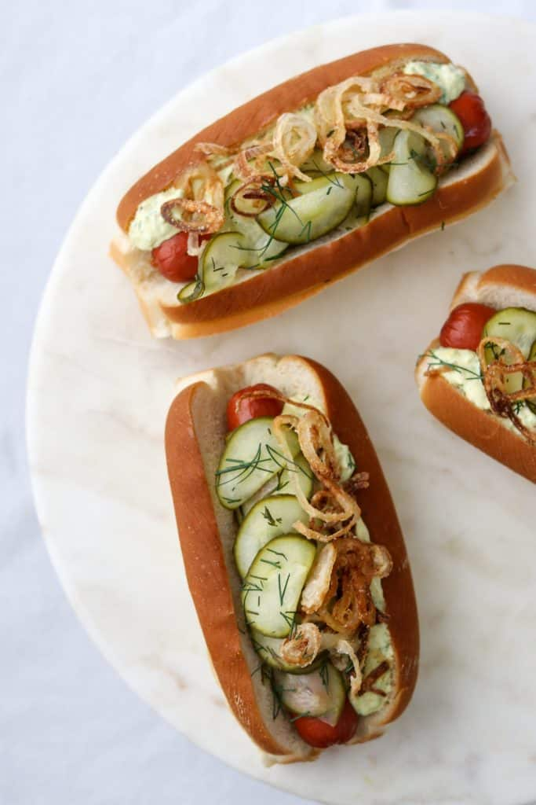

Ingredients
- 4-6 best quality hot dogs
- Crispy Fried Shallots or store-bought crispy fried onions
- Fresh Pickled Cucumbers or store-bought dill pickle slices
- Danish Remoulade Sauce recipe follows
- ▢ 4-6 hot dog buns for serving
For the Danish Remoulade Sauce:
- ½ cup prepared mayonnaise
- 2 tablespoons skyr Icelandic yogurt, Greek yogurt or sour cream
- 1 heaping teaspoon dijon mustard
- 1 tablespoon capers coarsely chopped
- 2 tablespoons Fresh Pickled Cucumbers or store-bought dill pickles finely chopped
- 1 tablespoon minced shallot
- 2 tablespoons chopped fresh Italian parsley
- 1 teaspoon curry powder
Instructions
- Make the Danish Remoulade: Combine all ingredients in a small bowl and stir until fully combined
- Heat grill. Grill hot dogs over medium heat until heated through and nicely browned, about 7-10 minutes
- Place one hot dog inside of each bun. Spoon Danish Remoulade over the length of the hot dog, followed by pickled cucumbers and a sprinkle of crispy shallots. Serve immediately.